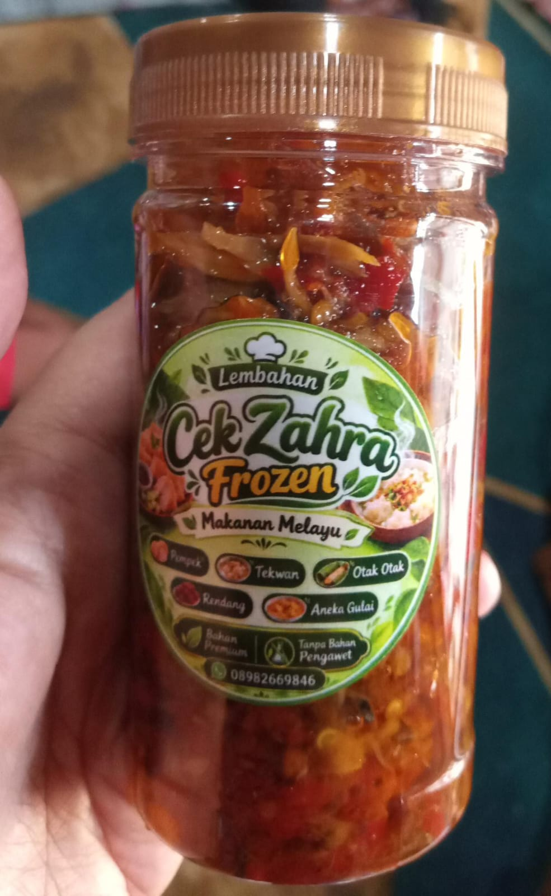
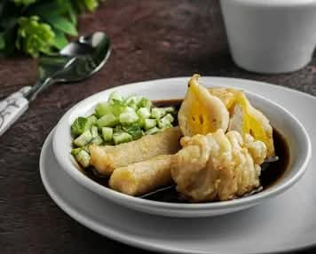
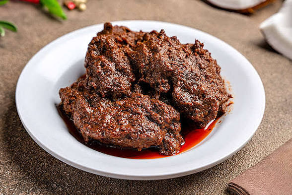

Halo! Perkenalkan, nama saya Andi. Saya adalah seorang pelajar yang suka belajar hal baru, mengembangkan kreativitas, dan mencoba berbagai pengalaman menarik. Ini adalah website personal saya.
Saya tertarik Pada olahraga terlebih lagi Olahraga badminton dari kecil saya sudah bercita cita menjadi pemain badminton .
Saya suka bermain game pada waktu luang, terutama Mobile Legends dan terkadang jikalau saya butuh hiburan game lah yang membuat saya terhibur.
Saya suka memasak itu karena orang tua saya terlebih lagi ibu saya bisa memasak makanan yang enak mulai dari situ saya mulai menyukai Memasak.
Berikut adalah beberapa makanan yang pernah saya buat.

Sambal buatan saya yang memiliki rasa pedas dan cocok sebagai pelengkap makanan.

Masakan pempek yang saya buat sebagai lauk untuk dinikmati bersama Cuka Buatan saya.

Masakan Rendang buatan saya yang lezat dan cocok untuk hidangan sehari-hari.
Email: amdim@gmail.com
TikTok: @Andiii
Terima kasih sudah mengunjungi website saya!